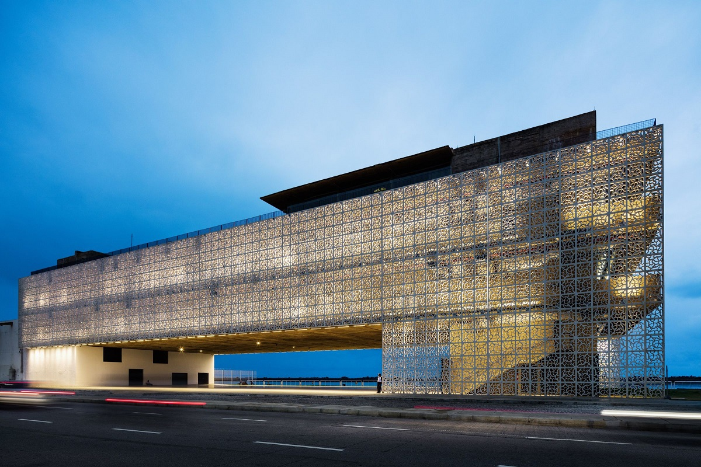

Cais do Sertão
O Cais do Sertão é um museu interativo que homenageia a cultura nordestina e Luiz Gonzaga, o Rei do Baião. Com exposições modernas e interativas, é uma jornada emocionante pela rica herança do Nordeste.

O Cais do Sertão é um museu interativo que homenageia a cultura nordestina e Luiz Gonzaga, o Rei do Baião. Com exposições modernas e interativas, é uma jornada emocionante pela rica herança do Nordeste.